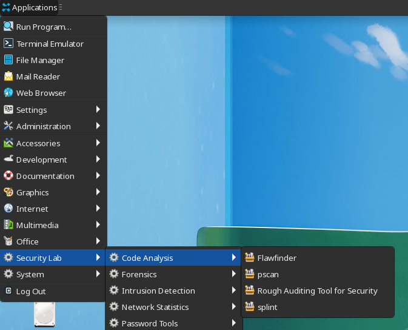
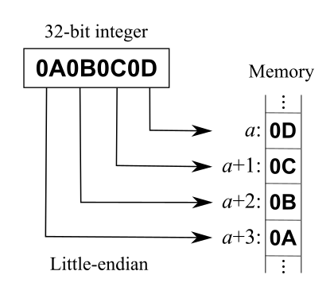
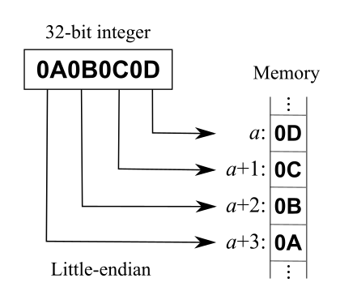

Binary Exploit Resources I Recently Trying to Learn
1. resources
2. tools
2.1. code auditing

2.1.1. pscan
2.1.2. rats
2.1.3. splint
2.1.4. flawfinder
2.2. debug
2.2.1. gdb
3. notes on video
3.1. 0x04: asm basics
3.1.1. to show assembly in the source code window in gud, M-x gdb-display-disassembly-buffer
3.2. 0x06: tools
3.2.1. simple tools
3.2.2. 0x0A: deal with numbers
- endian?
from Wikipedia
 
x86 is little endian

x86 is little endian
- tools
- python
>>> int('111', 2) 7 >>> hex(123) '0x7b' >>> import struct # https://docs.python.org/3.10/library/struct.html#format-characters >>> struct.pack("<I", 0x61626364) # little endian b'dcba' >>> struct.pack(">I", 0x61626364) # big endian b'abcd' - iex
iex(1)> <<0x61626364::32>> "abcd" iex(2)> Base.decode16("61626364") {:ok, "abcd"}
- python